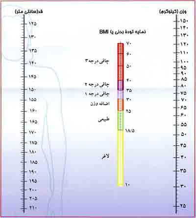

محاسبه BMI
توصیههایی برای حفظ سلامت و تناسب وزن
اگرچه بالارفتن سن، سابقه فامیلی و جنس در افزایش بار بیماریهای قلبی- عروقی، دیابت، پرفشاری خون و برخی از انواع سرطانها مؤثر است اما اضافه وزن و چاقی به عنوان عامل تشدیدکننده این بیماریها حتماً باید مورد توجه قرار گیرد. بنابراین، توصیه میشود وزن خود را در محدوده طبیعی حفظ کنید.
نمایه توده بدنی(BMI) شاخص ارزیابی بدن از نظر وضعیت جسمانی در مقایسه با استاندارد است. براساس این شاخص افراد به ۴ گروه لاغر، در محدوده وزن طبیعی، دارای اضافه وزن و چاق طبقهبندی میشوند. برای محاسبه نمایه توده بدن (BMI) میتوانید از فرمول زیر استفاده کنید: BMI برابر است با وزن (کیلوگرم) تقسیم بر مجذور قد(متر)
همچنین میتوان با استفاده از نمودار، نمایه توده بدن (BMI) را اندازه گیری کرد.
- اگر خطکش قسمت زرد را قطع کند عدد شما کمتر از 5/18 است و شما لاغر هستید، سعی کنید با به کار بستن توصیههای زیر به وزن طبیعی برسید:
- تنوع غذایی را رعایت کرده و در برنامه غذایی روزانه از انواع گروهای غذایی شامل نان و غلات، سبزیها و میوهها، شیر و لبنیات و گوشت، حبوبات و تخم مرغ، چربیها و روغنهای مایع استفاده کنید.
- در وعده صبحانه غذاهای پرانرژی مثل عسل، مربا و کره مصرف کنید.
- در میان وعدهها از بیسکویت، کیک، شیرینی، شیر، بستنی، کلوچه، نان و پنیر وخرما، سیبزمینی پخته، میوههای تازه و خشک و انواع مغزها (بادام، گردو، پسته، فندق) استفاده کنید.
- همراه با مصرف سالاد و سبزیها از روغنهای مایع نباتی مثل روغن زیتون استفاده کنید.
- از انواع چاشنیهای مورد علاقه خود برای افزایش اشتها استفاده کنید.
- اگر در قسمت سبز بودید، به شما تبریک میگوییم، وزن مناسبی دارید. سعی کنید وزن خود را با رعایت اصول تنوع و تعادل و میزان مناسب فعالیت بدنی در همین حدود نگه دارید.
- اگر در قسمت نارنجی تا قرمز قرار گرفتید یعنی BMI شما مساوی و یا بیشتر از ۲۵ است. شما اضافه وزن دارید و یا چاق هستید به توصیههای زیر توجه و عمل کنید:
- تعداد وعدههای غذا را در روز افزایش دهید اما حجم هر وعده را کم کنید.
- تا حد امکان مصرف قند و شکر و غذاهای حاوی آنها مثل شیرینی، شکلات، آب نبات، نوشابهها، شربتها و آب میوههای صنعتی را محدود کنید.
- از مصرف غذاهای پرچرب و سرخ شده پرهیز کنید و روغن مصرفی حتماً مایع باشد.
- از مصرف انواع سس سالاد، کره، خامه، سرشیر و پنیرهای پرچرب خودداری کنید.
- شیر و لبنیات مصرفی حتمأ از انواع کم چرب باشند.
- از مصرف فراوردههای گوشتی پرچرب مثل سوسیس، کالباس و همبرگر و کله پاچه و مغز خودداری شود به جای برنج و ماکارونی بیشتر از نان سبوس دار استفاده کنید.
- به جای گوشت قرمز، بیشتر از گوشتهای سفید بهخصوص ماهی استفاده شود.
- حبوبات پخته مثل عدس و لوبیا بیشتر استفاده شوند.
- گوشت مصرفی کاملاً لخم و مرغ و ماهی بدون پوست مصرف شوند.
- میوهها و سبزیهای خام بیشتر مصرف شوند، مصرف سالاد قبل یا همراه با غذا توصیه میشود.
- به جای آب میوه بهتر است خود میوه مصرف شود.
- غذاها بیشتر به شکل آب پز، بخارپز، کبابی یا تنوری مصرف شوند.
- مصرف دانههای روغنی مثل گردو، فندق، بادام، تخمه، پسته و زیتون را محدود کنید.
- تنقلات کم ارزش یا پرچرب مثل آب نبات، شکلات، چیپس را به هیچ وجه مصرف نکنید.
- از مصرف زیاد غذاهای آماده و کنسروی خودداری کنید.
- مصرف نمک و غذاهای شور را محدود کنید.
- فعالیتهای بدنی و ورزش متناسب با سن و شرایط جسمی بسیار مفید است، چون انرژی اضافی را قبل از ذخیره شدن به صورت چربی میسوزاند. نشانه یک ورزش درست این است که شما را شاداب میکند و چربی اضافی جمع شده در بدن را به تدریج میسوزاند.

با وزن مناسب سالمتر بمانید
چگونه از نمودار استفاده کنیم؟
- روی خط وزن، وزن خود را علامت بزنید. (وزن به کیلوگرم حساب شود)
- روی خط قد، قد خود را علامت بزنید. (قد به سانتیمتر حساب شود)
- با یک خط کش دو نقطه علامت زده شده را به هم وصل کنید.
- پس از اتصال دو نقطه ببینید خط کش نوار رنگی را در چه قسمتی قطع کرده است.
- نمایه توده بدنی شما در این محدوده است.
چرا باید وزنمان را کاهش دهیم؟
بسیاری از افراد دچار اضافه وزن میباشند. در میان این افراد، برخی نیز دچار چاقی هستند. افرادی که دچار اضافه وزن یا چاقی بوده حتی اگر فاقد سایر عوامل خطرزا باشند، با احتمال بیشتری مبتلا به بیماریهای قلبی و سکته مغزی میشوند. چاقی، وضعیتی ناسالم میباشد؛ چرا که سبب وارد آمدن فشار و بار اضافی بر قلب میشود. چاقی میتواند فشارخون و کلسترول خون را افزایش دهد و ممکن است منجر به بروز بیماری قند خون (دیابت) گردد.
کاهش وزن یکی از بهترین راههای کاهش خطرات قلبی و سایر بیماریها میباشد.
شما از طریق دستیابی به وزن دلخواه خود و حفظ آن میتوانید میزان خطر ابتلاء به بیماری قلبی را کاهش دهید. این به مفهوم کاهش مصرف چربی و افزایش مصرف میوهجات، سبزیجات و حبوبات است. همچنین میزان فعالیت جسمانی نیز باید افزایش یابد.
چگونه میتوانیم وزن خود را کاهش دهیم؟
آغاز یک رژیم غذایی آسان بوده اما ادامه دادن آن دشوار میباشد. شما ابتدا باید با تعیین اهدافی، خودتان را آماده سازید. در مورد موانع موجود بر سر راهتان فکر کنید و تصمیم بگیرید که چگونه با مشکلات مواجه خواهید شد.
مشاوره با یک متخصص تغذیه یا رژیم درمانی در مورد برنامه غذایی مناسب برای شما مطلوب است. استفاده از رژیمهایی که هر از چندگاه مُد میشوند و عدم غذا خوردن به منظور کاهش سریع وزن، عاقلانه نمیباشد. شما یک شبه دچار اضافه وزن نشده اید. موفقترین افرادی که رژیم غذایی میگیرند میدانند که میبایست این تغییرات را در طول زمان ایجاد کنند و نباید ناامید شده و رژیم غذایی را رها کنند.
- در مورد عادات غذایی خود فکر کنید. آیا شما به شکل عادتی غذا میخورید؟ یا فقط مواقعی که گرسنه هستید این کار را انجام میدهید؟ اگر متوجه شدهاید که به شکل خودکار زمانی که هر شب جلوی تلویزیون نشستهاید چیزی میخورید، بهتر است که تغییراتی را در خانه بدهید و به خود اجازه ندهید که در هر جایی هر چیزی بخورید.
- تصمیم بگیرید که چگونه وسوسه غذاخوردن را کنترل کنید. زمانیکه غذاهای پرکالری به شما پیشنهاد میشود، آنها را مؤدبانه ولی حتمأ رد کنید. سعی کنید اگر بیرون از خانه غذا میخورید، جایی را در نظر داشته باشید که بتوانید غذاهای کم کالریتر را انتخاب کنید.